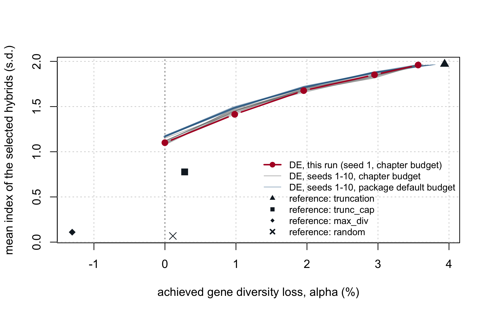

Show code
st1 <- stage1_simulate(book_cfg)
c(hybrids = nrow(st1$X), markers = ncol(st1$X),
f_min = min(st1$f), f_max = max(st1$f))
#> hybrids markers f_min f_max
#> 625.00000 2000.00000 0.64475 0.83175The package’s two stages, run once, on one simulated dataset: stage1_simulate() builds the three-object contract of Chapter 6, and stage2_select() selects hybrids from it under a grid of diversity budgets. That is the hybrid-selection side of a programme only. The stages S1 to S3 of Chapter 13 (pool conservation, doubled-haploid (DH) crosses, line selection) and the crossing and testing design of Chapter 18, Chapter 19 and Chapter 20 are not run here. Then the checklist, which draws on the whole book.
st1 <- stage1_simulate(book_cfg)
c(hybrids = nrow(st1$X), markers = ncol(st1$X),
f_min = min(st1$f), f_max = max(st1$f))
#> hybrids markers f_min f_max
#> 625.00000 2000.00000 0.64475 0.83175n_sel <- round(0.10 * nrow(st1$X))
res <- withCallingHandlers(stage2_select(
X = st1$X, f = st1$f, hybrids = st1$hybrids,
n_sel = n_sel,
alphas = NULL, # NULL = automatic grid, 0 to the attainable ceiling
weights = NULL, # NULL = equal weight across traits
fL = st1$fL, # optional: enables theta_A / theta_B / theta_AB
B_null = 500, B_full = 80, NP = 100, itermax = 200, verbose = FALSE),
# muffle only DEoptim's advice that NP be >= 10 x the number of parameters
warning = function(w) if (grepl("'NP'", conditionMessage(w), fixed = TRUE))
invokeRestart("muffleWarning"))The run’s settings, which every number below depends on. It selects \(n\) = 62 hybrids, 10 % of the \(N\) = 625 candidates, where Chapter 15, Chapter 12 and Chapter 23 select 60. The random-subset reference gd_ref comes from B_null = 500 subsets and the z-scores below from B_full = 80. The differential evolution (DE) runs with NP = 100 and itermax = 200, a nominal \(2 \times 10^4\) evaluations per budget, against \(6 \times 10^5\) at the package defaults (NP = 300, itermax = 2000). Every scenario is one run, with seed = 1 for both the null and the DE; Section 25.2 repeats the call over further seeds and at the default DE budget, from a cache. The ceiling and the frontier below are therefore not comparable number for number with those of Chapter 15 or Chapter 12, which use other \(n\) and other \(B\).
This chapter runs at the book’s teaching scale (25 + 25 lines, 2000 markers). inst/scripts/run_all.R calls the same two functions at the sim_config default (50 + 50 lines, 5000 markers), which is not the package’s declared production scale of 71 + 71 lines and 25000 markers (A8 of Section 10.1). It also uses other settings: \(n\) at 4 % of the candidates, and the package defaults of B_null, B_full, NP and itermax. Its tables go to report/. run_benchmark.R produces the numbers quoted in README.md. Neither script is run by this chapter, and their run times are not measured here.
Rscript inst/scripts/run_all.R
Rscript inst/scripts/run_benchmark.RWith real data only the first line changes:
st1 <- stage1_build(X = my_hybrid_matrix, ped = my_pedigree,
traits = my_predicted_traits, fL = my_line_coancestry)unlist(res$ref)
#> gd_ref gd_se alpha_max n_sel population_bias
#> 3.259845e-01 3.556567e-05 3.938109e-02 6.200000e+01 6.467346e-03
# the ceiling is the achieved loss of the truncation plan
stopifnot(isTRUE(all.equal(
res$metrics$alpha[res$metrics$scenario == "ref_truncation"], res$ref$alpha_max)))alpha_max in res$ref is the code name of the attainable ceiling \(\alpha_{\text{trunc}}\) of Chapter 15: the loss that pure truncation incurs, measured against the same-size baseline of Section 11.9. It is not the budget \(\alpha_{\max}\), which in this chapter, as in Chapter 15, is the policy value a scenario requests. A requested budget at or above \(\alpha_{\text{trunc}}\) constrains nothing. For a budget above it stage2_select() raises a warning that the constraint is inoperative, and then still runs the DE for that scenario and returns its plan under the DE_alpha_* label like any other. The automatic grid (alphas = NULL) ends at \(\alpha_{\text{trunc}}\), so no such warning arises in this run. The call above muffles one warning only: the DEoptim advice that NP be at least ten times the number of parameters, which is raised once per DE run, 5 times in this call. Every other warning, the inoperative-budget one included, would surface.
Table 25.1 gives the metrics of the nine scenarios of this run.
fmt(res$metrics[, c("scenario", "alpha", "index", "Ns", "Ne_parents",
"Ne_lines_A", "Ne_lines_B", "max_line", "alleles_lost")], 4)$metrics by stage2_select() (the metrics are defined in Chapter 11). Five DE rows, one per requested budget, the name carrying \(\alpha_{\max}\) in percent; four reference selections (ref_*). alpha is the achieved gene diversity loss against the same-size random baseline (a fraction); index is the mean index of the selected hybrids in standard deviations. Teaching scale (25 + 25 lines, 2000 markers), \(n\) = 62 of \(N\) = 625 candidates, DE and null seed 1.
| scenario | alpha | index | Ns | Ne_parents | Ne_lines_A | Ne_lines_B | max_line | alleles_lost |
|---|---|---|---|---|---|---|---|---|
| DE_alpha_0.00 | 0.0000 | 1.1004 | 0.7418 | 27.4571 | 12.4805 | 15.2540 | 10 | 63 |
| DE_alpha_0.98 | 0.0098 | 1.4141 | 0.7383 | 22.3488 | 9.1962 | 14.2370 | 14 | 81 |
| DE_alpha_1.97 | 0.0195 | 1.6767 | 0.7349 | 18.0894 | 7.3359 | 11.7914 | 16 | 106 |
| DE_alpha_2.95 | 0.0295 | 1.8523 | 0.7314 | 15.8843 | 5.9505 | 11.9379 | 20 | 116 |
| DE_alpha_3.94 | 0.0357 | 1.9600 | 0.7292 | 14.3701 | 5.2948 | 11.1744 | 21 | 125 |
| ref_truncation | 0.0394 | 1.9701 | 0.7280 | 13.4877 | 4.6878 | 12.0125 | 23 | 124 |
| ref_trunc_cap | 0.0028 | 0.7769 | 0.7408 | 31.6379 | 15.7541 | 15.8843 | 4 | 47 |
| ref_max_div | -0.0131 | 0.1100 | 0.7465 | 36.9615 | 18.6602 | 18.3048 | 5 | 36 |
| ref_random | 0.0011 | 0.0682 | 0.7414 | 37.3204 | 17.9626 | 19.4141 | 6 | 31 |
Read the index column against alpha. The scenario name carries the requested budget in percent (DE_alpha_3.94 requests \(\alpha_{\max} = \alpha_{\text{trunc}}\)); the alpha column is the loss the plan achieved. The five DE_ rows are the index each budget bought, on this dataset, at this selection intensity and at the evaluation budget stated above; Section 25.2 reads them as a frontier and states what limits that reading. The four ref_ rows are reference selections, not budgets.
Now read Ne_parents against Ns in the same rows. Chapter 10 calls for \(F_{hom}\) and \(F_{drift}\) to be computed separately (Section 25.1.3 does), and names ne_parents() as this book’s implementation of the parent-count side of that diagnostic. stage2_select() has no argument that bounds Ne_parents, so in this run it is a report line, not a constraint (Table 25.2):
d <- res$metrics
fmt(data.frame(scenario = d$scenario,
Ns = d$Ns,
Ne_parents = d$Ne_parents,
Ns_relative = d$Ns / max(d$Ns),
Ne_par_relative = d$Ne_parents / max(d$Ne_parents)), 3)
# GD = 1 - theta, Ns = 1/(2 theta), hence Ns is a function of the achieved alpha
stopifnot(isTRUE(all.equal(d$GD, 1 - d$theta)),
isTRUE(all.equal(d$Ns, 1 / (2 * d$theta))),
isTRUE(all.equal(d$Ns, 1 / (2 * (1 - res$ref$gd_ref * (1 - d$alpha))))))Ns) and Ne_parents for each scenario of Table 25.1, and each divided by its maximum over the nine scenarios (Ns_relative, Ne_par_relative).
| scenario | Ns | Ne_parents | Ns_relative | Ne_par_relative |
|---|---|---|---|---|
| DE_alpha_0.00 | 0.742 | 27.457 | 0.994 | 0.736 |
| DE_alpha_0.98 | 0.738 | 22.349 | 0.989 | 0.599 |
| DE_alpha_1.97 | 0.735 | 18.089 | 0.984 | 0.485 |
| DE_alpha_2.95 | 0.731 | 15.884 | 0.980 | 0.426 |
| DE_alpha_3.94 | 0.729 | 14.370 | 0.977 | 0.385 |
| ref_truncation | 0.728 | 13.488 | 0.975 | 0.361 |
| ref_trunc_cap | 0.741 | 31.638 | 0.992 | 0.848 |
| ref_max_div | 0.747 | 36.962 | 1.000 | 0.990 |
| ref_random | 0.741 | 37.320 | 0.993 | 1.000 |
Result. \(N_s\) goes from 0.7418 at \(\alpha_{\max} = 0\) to 0.728 under truncation; Ne_parents goes from 27.5 to 13.5, against 37.3 for the random subset. The two columns are not on one scale. On molecular \(\mathbf f\), \(N_s = 1/(2\theta_S)\) lies in \([1/2, 1]\) at biallelic loci and is not a number of individuals (Section 11.3), so its ratio to its own maximum (Ns_relative) says nothing about the size of a pool. In this run \(N_s\) is also fixed by the achieved loss: with gene diversity \(GD_S = 1 - \theta_S\) and \(\alpha = (GD_{\text{ref}} - GD_S)/GD_{\text{ref}}\) (Equation 11.15), \(N_s = 1/\{2[1 - GD_{\text{ref}}(1 - \alpha)]\}\) (all three asserted in the code of Table 25.2), so the Ns column restates the constraint and adds nothing to the alpha column.
Interpretation, and what limits it. The contrast that carries information is between the lens the budget pins (\(\theta_S\), \(GD_S\), \(\alpha\), and therefore \(N_s\)) and a parent-count quantity it does not pin. A report limited to the first would not show the fall of Ne_parents. This is one dataset; the dispersion of Ne_parents over the optimiser’s seed is given in Section 25.2.
Table 25.3 gives both lenses and the pool partition for each scenario.
fmt(res$metrics[, c("scenario", "alpha", "F_hom", "F_drift", "cov_diag",
"rare_retained", "GD_WI_hyb", "GD_BS", "F_ST")], 4)alpha (a fraction), F_hom and F_drift on the frozen base \(p_0\), their gap cov_diag, rare_retained (the fraction of the candidate pool’s rare alleles still present in the selected set), the within-hybrid gene diversity GD_WI_hyb, the between-pool component GD_BS and the statistic F_ST \(= GD_{BS}/GD_T\).
| scenario | alpha | F_hom | F_drift | cov_diag | rare_retained | GD_WI_hyb | GD_BS | F_ST |
|---|---|---|---|---|---|---|---|---|
| DE_alpha_0.00 | 0.0000 | 0.0038 | 0.0161 | -0.0123 | 0.8636 | 0.1834 | 0.0393 | 0.1205 |
| DE_alpha_0.98 | 0.0098 | 0.0132 | 0.0248 | -0.0116 | 0.8312 | 0.1829 | 0.0417 | 0.1293 |
| DE_alpha_1.97 | 0.0195 | 0.0224 | 0.0348 | -0.0124 | 0.7727 | 0.1828 | 0.0452 | 0.1414 |
| DE_alpha_2.95 | 0.0295 | 0.0352 | 0.0422 | -0.0069 | 0.7143 | 0.1818 | 0.0471 | 0.1490 |
| DE_alpha_3.94 | 0.0357 | 0.0377 | 0.0490 | -0.0113 | 0.7143 | 0.1821 | 0.0499 | 0.1586 |
| ref_truncation | 0.0394 | 0.0412 | 0.0534 | -0.0121 | 0.7338 | 0.1822 | 0.0514 | 0.1640 |
| ref_trunc_cap | 0.0028 | 0.0154 | 0.0114 | 0.0039 | 0.7273 | 0.1816 | 0.0370 | 0.1138 |
| ref_max_div | -0.0131 | -0.0124 | 0.0063 | -0.0187 | 0.9481 | 0.1853 | 0.0362 | 0.1096 |
| ref_random | 0.0011 | 0.0081 | 0.0066 | 0.0015 | 0.9481 | 0.1805 | 0.0357 | 0.1097 |
F_ST is the statistic \(GD_{BS}/GD_T\) of Equation 3.7 computed on each selected set. It is not the Balding-Nichols parameter \(F_{BN}\) of the simulation.
alpha constrains the first lens only. F_drift is the lens it does not pin, and cov_diag is exactly the gap between them, \(F_{hom} - F_{drift}\) (Equation 10.4; Eq. 3 of Meuwissen et al. (2020)). The largest absolute deviation over the nine rows is printed below and asserted to lie within 100 machine epsilons, the tolerance of an exact identity; the package’s test suite asserts it too (tests/testthat/test-lenses.R):
dev_eq3 <- max(abs(d$cov_diag - (d$F_hom - d$F_drift)))
stopifnot(dev_eq3 < 100 * .Machine$double.eps)
c(max_deviation_from_Eq3 = dev_eq3)
#> max_deviation_from_Eq3
#> 6.678685e-17Result. GD_BS rises with the budget, from 0.0393 at \(\alpha_{\max} = 0\) to 0.0514 under truncation, against 0.0357 for the random subset. Its cause is not identified here: concentrating the use of a few lines inside a pool raises \(GD_{BS}\) with no change in the lines (Table 11.11), and this run has no arm that separates that effect from selection. The index is additive and the model has no dominance (Section 25.3), so the rise is not evidence about heterosis; \(GD_{BS}\) stands for the divergence heterosis rests on only under the conditions of Table 3.6 (flat dominance, inbred parents, a complete factorial). Chapter 13 is the reason to watch it rather than celebrate it.
Table 25.4 places six of the metrics against the random null.
fmt(res$z_scores[, c("scenario", "z_GD", "z_Ne_parents", "z_F_drift",
"z_rare_retained", "z_GD_BS", "z_ANE")], 2)B_full = 80 random subsets of the same size). Less diverse than chance is negative for z_GD, z_Ne_parents and z_rare_retained, and positive for z_F_drift and z_ANE; z_GD_BS has no worse direction.
| scenario | z_GD | z_Ne_parents | z_F_drift | z_rare_retained | z_GD_BS | z_ANE |
|---|---|---|---|---|---|---|
| DE_alpha_0.00 | 0.00 | -5.63 | 7.71 | -4.27 | 6.57 | 6.96 |
| DE_alpha_0.98 | -5.20 | -8.56 | 14.78 | -5.69 | 11.05 | 9.97 |
| DE_alpha_1.97 | -10.35 | -11.00 | 22.79 | -8.24 | 17.33 | 19.86 |
| DE_alpha_2.95 | -15.63 | -12.26 | 28.76 | -10.80 | 20.87 | 17.76 |
| DE_alpha_3.94 | -18.88 | -13.13 | 34.27 | -10.80 | 25.81 | 16.12 |
| ref_truncation | -20.85 | -13.64 | 37.81 | -9.94 | 28.51 | 9.80 |
| ref_trunc_cap | -1.47 | -3.23 | 3.95 | -10.23 | 2.44 | 17.27 |
| ref_max_div | 6.91 | -0.18 | -0.16 | -0.57 | 0.96 | 5.91 |
| ref_random | -0.59 | 0.03 | 0.08 | -0.57 | 0.12 | -0.43 |
Every metric in standard deviations from random selections of the same size (B_full = 80 subsets). The direction of “less diverse than chance” differs by column: negative for z_GD, z_Ne_parents and z_rare_retained, positive for z_F_drift and z_ANE. ANE is A-NE (accession-to-nearest-entry), the mean distance from each candidate to its nearest selected hybrid (Equation 11.8), where lower means better representation. z_GD_BS has no “worse” direction.
A z near zero says that a metric does not separate the plan from chance. It does not say that the metric is not acting as a constraint. z_GD is 0 at DE_alpha_0.00, the scenario in which \(GD\) is the binding constraint, and it is near zero on average only. That scenario holds \(\alpha\) at 0, so its \(GD\) sits at gd_ref, the mean of the B_null = 500 draws; z_GD is centred and scaled on the separate B_full = 80 draws. The difference between the two Monte Carlo means gives z_GD at \(\alpha = 0\) a standard deviation of about \(\sqrt{1/80 + 1/500}\) = 0.12 z units (independent draws, and the B_full standard deviation taken as exact); the value printed at this seed is one draw of that error. A constrained metric is read against its budget. The metrics the constraint does not pin are the ones that move under it: at the same scenario z_Ne_parents is -5.6 and z_F_drift is 7.7. Each z divides by a standard deviation estimated from 80 subsets; if the null is close to normal, which is not checked here, that standard deviation carries a relative standard error of \(1/\sqrt{2(B_{full} - 1)}\) = 8 % (Section 11.10), not shown in Table 25.4.
Table 25.5 shows the hybrids selected under the most scenarios.
scn <-setdiff(names(res$selection), c(names(st1$hybrids), "n_scenarios"))
head(res$selection[order(-res$selection$n_scenarios),
c("hybrid", "line_A", "line_B", scn, "n_scenarios")], 8)$selection, ordered by n_scenarios: each hybrid with its two parent lines, 1 in a scenario’s column if that scenario selects it and 0 otherwise, and n_scenarios, the number of the nine scenarios of Table 25.1 that select it.
| hybrid | line_A | line_B | DE_alpha_0.00 | DE_alpha_0.98 | DE_alpha_1.97 | DE_alpha_2.95 | DE_alpha_3.94 | ref_truncation | ref_trunc_cap | ref_max_div | ref_random | n_scenarios | |
|---|---|---|---|---|---|---|---|---|---|---|---|---|---|
| 35 | 35 | 10 | 27 | 1 | 1 | 1 | 1 | 1 | 1 | 1 | 1 | 0 | 8 |
| 232 | 232 | 7 | 35 | 1 | 1 | 1 | 1 | 1 | 1 | 1 | 1 | 0 | 8 |
| 606 | 606 | 6 | 50 | 1 | 1 | 1 | 1 | 1 | 1 | 1 | 1 | 0 | 8 |
| 31 | 31 | 6 | 27 | 0 | 1 | 1 | 1 | 1 | 1 | 1 | 1 | 0 | 7 |
| 32 | 32 | 7 | 27 | 1 | 1 | 1 | 1 | 1 | 1 | 1 | 0 | 0 | 7 |
| 57 | 57 | 7 | 28 | 1 | 0 | 1 | 1 | 1 | 1 | 0 | 1 | 1 | 7 |
| 82 | 82 | 7 | 29 | 1 | 1 | 1 | 1 | 1 | 1 | 1 | 0 | 0 | 7 |
| 90 | 90 | 15 | 29 | 0 | 1 | 1 | 1 | 1 | 1 | 1 | 0 | 1 | 7 |
de_cols <- grep("^DE_", scn, value = TRUE)
c(scenarios = length(scn),
chosen_in_all_DE = sum(rowSums(res$selection[, de_cols, drop = FALSE]) ==
length(de_cols)),
never_chosen = sum(res$selection$n_scenarios == 0),
total_candidates = nrow(res$selection))
#> scenarios chosen_in_all_DE never_chosen total_candidates
#> 9 18 386 625n_scenarios counts, for each hybrid, the scenarios that select it, the four reference rows included. chosen_in_all_DE counts the hybrids selected under all five DE budgets of this run (DE and null seed 1). Whether the same hybrids recur under another seed of the optimiser is read from the same call repeated over DE/null seeds at the chapter’s DE budget and at the package default, cached by regenerate.R case_study (seed 1 at the chapter budget is asserted to be this run):
kept <- read.csv(book_data("case_study_kept.csv"))
live_kept <- res$selection$hybrid[
rowSums(res$selection[, de_cols, drop = FALSE]) == length(de_cols)]
stopifnot(setequal(kept$hybrid[kept$budget == "chapter" & kept$seed == 1],
live_kept))
kept_seeds <- sort(unique(kept$seed))
kept_tab <- t(vapply(c("chapter", "default"), function(b) {
s <- split(kept$hybrid[kept$budget == b],
factor(kept$seed[kept$budget == b], levels = kept_seeds))
c(seeds = length(s), min_kept = min(lengths(s)), max_kept = max(lengths(s)),
kept_in_every_seed = length(Reduce(intersect, s)),
kept_in_any_seed = length(Reduce(union, s)))
}, numeric(5)))
kept_tab
#> seeds min_kept max_kept kept_in_every_seed kept_in_any_seed
#> chapter 10 15 23 1 41
#> default 10 8 24 0 45Over 10 seeds, the number of hybrids kept under every DE budget ranges from 15 to 23 at the chapter’s DE budget and from 8 to 24 at the default. The sets do not coincide: the number kept under every budget in all 10 seeds is 1 at the chapter budget and 0 at the default, out of 41 and 45 kept in at least one seed. Within a run the plan keeps a core across budgets; which hybrids form it depends on the optimiser’s seed, so no set of hybrids is shown here to be robust to the choice of \(\alpha\).
Figure 25.1 draws the five DE rows of this run as a line and the four reference rows as separate marks. Behind them is the same stage2_select() call repeated over DE/null seeds at the chapter’s DE budget and at the package default, cached by regenerate.R case_study. seed drives both the null and the DE, so the two budgets are paired by seed; seed 1 at the chapter budget is asserted to reproduce this run. k is the position in the automatic grid, because the requested \(\alpha_{\max}\) moves with gd_ref and hence with the seed. Table 25.6 gives the mean and standard deviation of the index over seeds at each budget, and the paired gain of the default budget with its standard error and the number of seeds in which it is positive:
fr <-read.csv(book_data("case_study_frontier.csv"))
fr1 <- fr[fr$budget == "chapter" & fr$seed == 1, ]
m1 <- match(fr1$scenario, d$scenario)
stopifnot(!anyNA(m1), isTRUE(all.equal(fr1$index, d$index[m1])),
isTRUE(all.equal(fr1$alpha, d$alpha[m1])))
n_seed <- length(unique(fr$seed))
de_fr <- fr[!is.na(fr$k), ]
fr_ch <- de_fr[de_fr$budget == "chapter", ]
fr_def <- de_fr[de_fr$budget == "default", ]
# the two budgets share null and DE seed: paired by (seed, k)
w <- merge(fr_ch[, c("seed", "k", "index")], fr_def[, c("seed", "k", "index")],
by = c("seed", "k"), suffixes = c("_ch", "_def"))
stopifnot(nrow(w) == nrow(fr_ch), nrow(w) == nrow(fr_def))
gain <- w$index_def - w$index_ch
front_tab <- data.frame(
k = sort(unique(fr_ch$k)),
alpha_req_pct = 100 * tapply(fr_ch$alpha_max, fr_ch$k, mean),
index_ch = tapply(fr_ch$index, fr_ch$k, mean), sd_ch = tapply(fr_ch$index, fr_ch$k, sd),
index_def = tapply(fr_def$index, fr_def$k, mean), sd_def = tapply(fr_def$index, fr_def$k, sd),
gain = tapply(gain, w$k, mean),
se_gain = tapply(gain, w$k, sd) / sqrt(n_seed),
gain_pos = tapply(gain > 0, w$k, sum))
fmt(front_tab, 3)
# the loosest DE budget against the truncation plan, seed by seed
top <- merge(de_fr[de_fr$k == max(de_fr$k), c("budget", "seed", "index")],
fr[fr$scenario == "ref_truncation", c("budget", "seed", "index")],
by = c("budget", "seed"), suffixes = c("_de", "_trunc"))
trunc_wins <- tapply(top$index_trunc > top$index_de, top$budget, sum)
trunc_wins
#> chapter default
#> 10 10
# what the prose below states: the default budget moves the tighter points by
# more than their seed-to-seed s.d., and truncation beats the loosest DE point
# in every seed at both budgets
stopifnot(all(front_tab$gain[-nrow(front_tab)] > front_tab$sd_ch[-nrow(front_tab)]),
all(trunc_wins == n_seed))
np_it <- function(b) unlist(fr[fr$budget == b, c("NP", "itermax")][1, ])
cap_frontier <- sprintf(paste(
"Mean index of the selected hybrids (standard deviations of the index) against",
"the achieved gene diversity loss $\\alpha$ (%%). Red line: the five DE budgets",
"of this chapter's run (requested $\\alpha_{\\max}$ from 0 to",
"$\\alpha_{\\text{trunc}}$; DE/null seed 1, `NP` = %d, `itermax` = %d). Grey",
"lines: the same call over DE/null seeds %d-%d at that budget. Blue lines: the",
"same seeds at the package default (`NP` = %d, `itermax` = %d). Black marks: the",
"four reference selections of this run, which are plans, not budgets. Teaching",
"scale (%d + %d lines, %d markers), simulation seed %d, $n$ = %d of $N$ = %d.",
"The seed lines are cached by `regenerate.R case_study`."),
np_it("chapter")[[1]], np_it("chapter")[[2]], min(fr$seed), max(fr$seed),
np_it("default")[[1]], np_it("default")[[2]],
book_cfg$n_pool_A, book_cfg$n_pool_B, book_cfg$m, book_cfg$seed,
n_sel, nrow(st1$X))
de_d <- d[!is.na(d$alpha_max), ]
tr_d <- d[d$scenario == "ref_truncation", ]
oth_d <- d[is.na(d$alpha_max) & d$scenario != "ref_truncation", ]
alt_frontier <- sprintf(paste(
"Line chart of mean index against diversity loss in percent. The red DE line",
"rises from %.2f at %.2f %% loss to %.2f at %.2f %%. Grey lines for the other",
"seeds lie around it; blue lines for the default budget lie on average %.2f",
"index units above the grey ones at the same seed. The truncation mark is at",
"%.2f, %.2f %% loss; the other three reference marks lie between index %.2f",
"and %.2f."),
de_d$index[1], round(100 * de_d$alpha[1], 2) + 0, de_d$index[nrow(de_d)],
100 * de_d$alpha[nrow(de_d)], mean(gain), tr_d$index, 100 * tr_d$alpha,
min(oth_d$index), max(oth_d$index))k (position in the automatic grid). alpha_req_pct: mean requested budget \(\alpha_{\max}\) (%). index_ch, sd_ch: mean and standard deviation of the index over seeds at the chapter’s DE budget (NP = 100, itermax = 200). index_def, sd_def: the same at the package default (NP = 300, itermax = 2000). gain: mean paired gain of the default budget over the chapter budget, seed by seed; se_gain: its standard error; gain_pos: the number of seeds in which it is positive. Index in standard deviations. Cached by regenerate.R case_study.
| k | alpha_req_pct | index_ch | sd_ch | index_def | sd_def | gain | se_gain | gain_pos |
|---|---|---|---|---|---|---|---|---|
| 1 | 0.000 | 1.105 | 0.023 | 1.168 | 0.006 | 0.063 | 0.008 | 10 |
| 2 | 0.982 | 1.444 | 0.018 | 1.486 | 0.006 | 0.042 | 0.006 | 10 |
| 3 | 1.964 | 1.680 | 0.017 | 1.714 | 0.007 | 0.034 | 0.006 | 10 |
| 4 | 2.946 | 1.834 | 0.019 | 1.874 | 0.007 | 0.040 | 0.008 | 9 |
| 5 | 3.928 | 1.960 | 0.001 | 1.961 | 0.002 | 0.001 | 0.001 | 7 |
de <- d[!is.na(d$alpha_max), ]
rf <- d[is.na(d$alpha_max), ]
rf_pch <- c(ref_truncation = 17, ref_trunc_cap = 15, ref_max_div = 18,
ref_random = 4)[rf$scenario]
plot(100 * fr$alpha, fr$index, type = "n",
xlim = range(100 * c(fr$alpha, rf$alpha)), ylim = range(c(fr$index, rf$index)),
xlab = "achieved gene diversity loss, alpha (%)",
ylab = "mean index of the selected hybrids (s.d.)")
grid()
abline(v = 0, lty = 3, col = book_pal[["mid"]])
for (s in unique(fr$seed)) {
lines(100 * fr_def$alpha[fr_def$seed == s], fr_def$index[fr_def$seed == s],
col = adjustcolor(book_pal[["A"]], 0.45))
lines(100 * fr_ch$alpha[fr_ch$seed == s], fr_ch$index[fr_ch$seed == s],
col = adjustcolor(book_pal[["mid"]], 0.5))
}
lines(100 * de$alpha, de$index, type = "b", pch = 19, lwd = 2,
col = book_pal[["loss"]])
points(100 * rf$alpha, rf$index, pch = rf_pch, cex = 1.3, col = book_pal[["ink"]])
legend("bottomright", bty = "n", cex = 0.8,
legend = c("DE, this run (seed 1, chapter budget)",
sprintf("DE, seeds %d-%d, chapter budget", min(fr$seed), max(fr$seed)),
sprintf("DE, seeds %d-%d, package default budget",
min(fr$seed), max(fr$seed)),
sub("^ref_", "reference: ", rf$scenario)),
col = c(book_pal[["loss"]], adjustcolor(book_pal[["mid"]], 0.5),
adjustcolor(book_pal[["A"]], 0.45), rep(book_pal[["ink"]], nrow(rf))),
lty = c(1, 1, 1, rep(NA, nrow(rf))), lwd = c(2, 1, 1, rep(NA, nrow(rf))),
pch = c(19, NA, NA, rf_pch))
NP = 100, itermax = 200). Grey lines: the same call over DE/null seeds 1-10 at that budget. Blue lines: the same seeds at the package default (NP = 300, itermax = 2000). Black marks: the four reference selections of this run, which are plans, not budgets. Teaching scale (25 + 25 lines, 2000 markers), simulation seed 1, \(n\) = 62 of \(N\) = 625. The seed lines are cached by regenerate.R case_study.
Result. Between successive DE budgets the index rises by 0.32, 0.27, 0.18, 0.18 index units per percentage point of achieved \(\alpha\), from the tightest budget to the loosest. At the loosest budget the DE plan scores 1.96 at \(\alpha\) = 0.0357; the truncation plan scores 1.97 at \(\alpha\) = 0.0394, a loss that budget allows. The warm start of stage2_select() (greedy plans and the capped truncation) does not include the truncation plan.
Over the 10 seeds, the standard deviation of the index at the chapter budget is between 0.001 and 0.023 across the five grid points. The default budget raises the index at the four tighter points by 0.063, 0.042, 0.034, 0.04 (standard errors at most 0.008), and at the loosest by 0.001 (s.e. 0.001, positive in 7 of 10 seeds). Truncation scores above the DE at the loosest budget in 10 of 10 seeds at the chapter budget and in 10 at the default, by 0.0057 to 0.0102 index units over the 20 (seed, budget) pairs. Secant slopes of the default-budget means are 0.32, 0.23, 0.16, 0.12 index units per percentage point. Ne_parents at \(\alpha_{\max} = 0\) ranges from 25.3 to 27.5 over the seeds at the chapter budget.
Interpretation, and what limits it. The DE curve is a price list of this run, not the constrained optimum. At the chapter’s evaluation budget part of each price is the optimiser’s shortfall: the default budget moves the tighter points by more than their seed-to-seed spread. Its loosest point stays below a feasible plan at both budgets run, so that shortfall is not closed by the 30-fold increase in nominal evaluations (\(\texttt{NP} \times \texttt{itermax}\)) between them; no larger budget was run. The warm start lacks the truncation plan; whether adding it closes the gap is not run here. How much of the default-budget price is still shortfall is not separated, because no bound (ocs_bound(), Section 17.4) is computed here, and all of it is one simulated dataset. The secant slopes show no sharp knee at either budget, and none is located. As in Chapter 15, where along the frontier to set the budget is the programme’s decision. Nor is the trade a permanent loss against a one-off gain: in Chapter 23 the index gain accumulates over cycles, and what the budgets leave for later cycles is that chapter’s subject, not this one’s.
Stated plainly, because the numbers above are precise and precision invites more confidence than the model supports.
The index carries no prediction error. The traits are built from known marker effects (Chapter 6). Chapter 12 (Finding 5) measures, within one cycle at the teaching scale, what happens when they are predicted: the plan’s reported index is biased upward, and for truncation at nominal accuracy \(r\) = 0.6, error correlated with relatedness costs more gene diversity than independent error of the same nominal accuracy. Chapter 14 fits the accuracies that validation schemes actually give. The reported index of a plan here should be read as an upper bound on what it would deliver in this one cycle; across cycles no such bound is claimed (Chapter 23, C7).
The model is additive. The index is a sum of additive marker effects. It misses heterosis and specific combining ability, which is precisely what a hybrid programme sells. The diversity constraint does not need a dominance model; the mean-performance ranking does (Chapter 5). Do not conflate them, and do not use these index values as performance predictions.
The pools are symmetric by construction, and still erode unevenly. Both are drawn from the same ancestral frequencies at the same Balding-Nichols parameter, \(F_{BN}\) = 0.15 (fst in sim_config, Equation 6.1). Even so, truncation leaves Ne_lines_A = 4.69 and Ne_lines_B = 12.01 in Table 25.1. Because the two pools are exchangeable by construction, which of them erodes faster in a run is a property of that draw, not of pool A or B, and this chapter runs one draw. Per-pool reporting (ne_lines_pool()) is therefore needed even when the pools are alike. Real pools that differ in size, history and internal structure would add a systematic difference on top, which this simulation does not represent.
\(N_s\) is not a drift projection. It is a static descriptor of a set, in \([1/2, 1]\) on molecular \(\mathbf f\) (Section 11.3). Do not extrapolate it forward.
What the run assumes and does not test. The parent lines are fully inbred (A2 of Section 10.1). The markers are biallelic and drawn independently (no linkage), and they are also the loci of the index: simulate_data() gives every marker an effect on each trait (Chapter 6), so the markers the metrics read are themselves under selection. Every one of the 25 x 25 crosses is made and evaluated, so the crossing plan and the testing design that would produce the 625 values (Chapter 18, Chapter 19, Chapter 20) are assumed away. \(n\) is 10 % of the candidates, no line has a usage cap (max_use = NULL), and the selector is the hybrid-key DE of stage2_select(), not the routes compared in Chapter 17. Each of these is a choice of this run; none of the numbers above is shown to hold without it.
One cycle, not a trajectory. Every result here is a single round of hybrid selection. Chapter 13 found, in 8 cached founder pools of one external study, that a diversity term on cross choice at S2 lowered the S2 loss and raised the S3 and S4 losses, and could not say whether it changed the effective size of the final set (a set the file does not record) or the marker alleles retained; the gene diversity of the final set, the outcome that was higher with the term in most pools, was added post hoc. The same question applies across cycles. A one-cycle constraint is not a multi-cycle policy: Chapter 23 runs fifteen cycles from five founder draws, and on the mean over draws the unconstrained programme has the higher index in the early cycles and the \(\alpha_{\max} = 0.02\) programme in the later ones; the crossing is not resolved by five draws (Section 23.3).
\(p_0\) must be frozen. build_ctx() sets \(p_0\) to the column means of the X it is given, on every call. This chapter makes one call, so \(p_0\) is the frequency over the 625 candidates. In a multi-cycle programme it must be the founder cycle’s frequencies, held fixed (run_cycles() does so, Section 23.2) – the single most common error in applying F_hom and F_drift (Chapter 10). Chapter 23 shows the failure directly: re-anchored each generation and read on the set the base was built from, five generations of real drift are reported as exactly none.
f, never on a centred VanRaden G, whose elements sum to zero by construction (Equation 2.4, Section 2.2).stage2_select(), the route this chapter runs, is sel_de() on \(n\) hybrid keys (Chapter 16); the line-weight encoding is sel_de_fast(). No experiment in the book isolates the encoding, and the closest comparison favours sel_de() uncapped (Chapter 17).sel_de() adds it to the fitness as a penalty, and sel_de_fast() satisfies it in the decoder by construction (Section 17.3.2.1). This chapter’s run has no cap.sel_de_fast() does, as a penalty that can bind but is not guaranteed met (Section 17.3.2.1); the achieved \(N_{e,\text{par}}\) is checked against the floor. In this chapter it is a report line.ocs_bound() (Section 17.4), not against a point of the continuous relaxation inside the budget, which is not a bound. Its converged attribute, a stalling criterion rather than a certificate, is read first: converged and the gap small, the gap is the most further search can gain if that criterion is trusted; converged and the gap large, keep going; not converged, no gap is reported (Chapter 17). A gap is the sum of the optimiser’s shortfall and the relaxation’s, and does not separate them (Chapter 16). This chapter computes no bound and no gap.F_hom and F_drift are computed separately and reported together, with cov_diag as the diagnostic, on a panel not used in the management where one exists (Section 10.7.5).F_drift is another (Section 25.1.3), and Chapter 12 (Finding 3) finds A-NE and E-NE (entry-to-nearest-entry) keeping as much rank variation at fixed \(\theta\) as allelic richness does. This chapter reports \(A_{\text{lost}}\) (alleles_lost) and rare_retained, not \(A_{\text{ret}}\).Three extensions the material here supports but does not cover, each needing new work rather than new derivation:
Real data ingestion. load_data() is the single swap point and is currently a stub. A worked path from a variant call format (VCF) file to the X/f/hybrids contract is what most readers will need first, and it is the one extension here that is pure engineering rather than new derivation.
Estimating the dominance effects. Chapter 5 shows that expected heterosis depends on the alignment between divergence and \(d\), and that no frequency-based statistic can see \(d\). Ranking crosses on more than the mean needs the dominance effects locus by locus, which the book does not estimate. Setting the \(\lambda\) of Chapter 11 needs less: two covariances of \(d\) with the frequencies, not \(d\) itself (Section 5.14.1). Section 5.13 sets out what a programme would run to obtain them.
Prediction error compounded across cycles. Chapter 12 Finding 5 measures it within one cycle and Chapter 23 assumes it away (C7). The two have not been run together. Correlated error concentrates the selection (Chapter 12), and in Chapter 23 the per-cycle gain is associated with the genic variance of the parents, an association that chapter does not test as a mechanism; how the two would combine across cycles is not known.
All the code of this chapter, in order and with the explanation kept as comments, is one script: 12-case-study.R. Download it, install hybdiv, and run it top to bottom in an empty directory; cached results are fetched on first use.